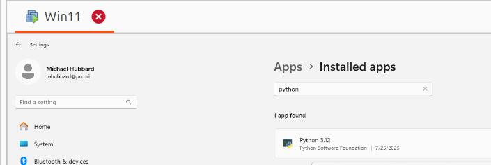

Getting Started

The scripts run on Mac/Linux/Windows! It took some effort to get all the paths and other details working across all three platforms but it was worth the effort in the end! You do not need any prior python programming experience to use them. The instructions below will walk you through step by step how to install Python, the Python Virtual Environment, the required libraries and activating the python virtual environment.
- Clone the repository from GitHub
- Create a Python Virtual Environment
- Activate the Python Virtual Environment
- Install dependencies
- Deactivate the Python Virtual Environment
Let's get started!
0. Install Python if you need it
Python is a popular programming language for Network Development Operations (NetDevOps). It's well worth the time to install Python and learn the basics of running Python scripts.
Windows 10 and Windows 11
If you haven't done any Python development on your Windows machine it doesn't have Python or Git installed. Python is the language the scripts are written in and Git is the industry standard version control system for NetDevOps. Follow the instructions below to install both packages.
Note
From docs.python.org Unlike most Unix systems and services, Windows does not include a system supported installation of Python. To make Python available, the CPython team has compiled Windows installers with every release for many years. These installers are primarily intended to add a per-user installation of Python, with the core interpreter and library being used by a single user.
Installing Python on Windows is simple.
- click the start menu
- Type
microsoft storeand pressenter - search for
python 3.12 - Click on the
Freebutton - click on
Get

One advantage of installing Python on Windows is the installer installs Python, pip and the Python Virtual environment venv. You can use where python from cmd.exe to verify that Python is installed.
You can also use the GUI tool Add or Remove Programs to verify Python is installed:

Test the installation on Windows
You should see something like this:
Python 3.12.10 (tags/v3.12.10:0cc8128, Apr 8 2025, 12:21:36) [MSC v.1943 64 bit (AMD64)] on win32
Type "help", "copyright", "credits" or "license" for more information.
To quit Python, type:
Install Git
If you are on Windows and don't have git installed, use
from cmd or PowerShell to install Git.
WinGet, also known as the Windows Package Manager, is pre-installed on Windows 11 versions 21H2 and later. If you don't have winget installed, you can install it using these steps:
- Type
microsoft storein the Windows search bar, pressenter - Search for
App Installer - Click on
Get
Or you can install the git package from The Official Git Page. It seems better to use the Microsoft Store but I'm not a Windows expert.
macOS
Apple provides a package called xcode-select full of developer tools like Python, git, and gcc (Gnu C Compiler), etc. To install xcode-select
- Open a terminal
- Type
xcode-select --install, pressenter
You can list the tools using
You now have Python, git, venv and many other dev tools.
Ubuntu 24.04 or higher
If you are on a brand new install of Ubuntu and haven't done any python coding you will need to install the Python venv and pip libraries before creating the virtual environment. We need to know what version of python you have installed. From a terminal, run the following:
which python3
/usr/bin/python3
ls -l /usr/bin/python3
lrwxrwxrwx - root 7 Aug 2024 /usr/bin/python3 -> python3.12
Python 3.12 is what my new Ubuntu 24.04 VM has installed. Run the following, replace 3.12 with your Python version.
This will install the Python virtual environment library and pip, the official package installer for Python. The && means run the second command only if the first succeeds.
1. Clone the Repository
All of the installation steps are done in the Mac/Linux terminal or cmd.exe/PowerShell on Windows. In my recent testing on Windows 11 24H2, I learned a lot about PowerShell on Windows 11. I created a page on what my setup looks like. I highly recommend installing the Windows Terminal and setting up PowerShell if you are a Windows user. Here is a link to the page - Using PowerShell with the Network Discovery scripts. PowerShell is also available on Mac/Linux. The configurations on the Using Powershell page work on all three OSes.
Open the Mac/Linux terminal or cmd/PowerShell and paste the following:
If you don't want to install Git
If you don't want to install git, you can download a zip file from the Network Discovery repository. Click on the green "Code" button and select "Download ZIP". Then unzip the file and cd into the Discovery directory.
I recommend installing Git. I make updates to the project and if you have git installed you can simply run git pull to pull down the latest version. Also, there are thousands of projects on GitHub.com and GitLab.com. Once you get comfortable with git you will have access to a lot of tools! You can install git from The official Git page.
If you plan to modify the python scripts then this won't work because your versions will be different than the repo and git will not allow you to overwrite. In that case, open a Pull Request on the repo and I'll see if I can accept your changes!
Info
Once you have the repository cloned it is linked to the repository on github.com. You should issue a git pull from the terminal once in a while to pull down any changes that have been made to the repository.
2. Using a Python Virtual Environment
I recommend running the scripts in a Python Virtual environment, especially if you on Mac/Linux. Both Operating systems use Python to manage system resources. macOS will usually stop you from installing into the system Python folder but Ubuntu may not. It is possible to break your system if you upgrade system level packages.
Using a virtual environment eliminates that risk.
Create the Python Virtual Environment
python -m venv venv --upgrade-deps --prompt="Discovery"
This will create the standard "venv" directory but when activated will display "Discovery". I prefer this over using python -m venv Discovery because it's the standard way to create the virtual environment. But I like seeing Discovery instead of venv when I activate the environment.
The --upgrade-deps argument tells python to upgrade pip to the latest version when creating the virtual environment. You need internet access for pip to be upgraded. If you don't have internet access, remove the --upgrade-deps argument.
Windows 11 24h2 issues
I developed the script on a Windows 11 22h1 laptop. On June 29, 2025 I cloned the repo to a Windows 11 24h2 laptop to demo for a friend and nothing worked! For some reason, Windows 11 24h2 installs Python 13.1 which is brand new (July 2025 when this was written) and several of the libraries I use haven't been updated to work with 13.1.
To resolve the issue, I installed Python 3.12 from the Windows store using:
Then I used python3.12 -m venv venv --upgrade-deps --prompt="Discovery" to successfully install the script with Python 3.12.
3. Activate the Virtual Environment
On Windows 11
.\venv\Scripts\activate
Verify that python is in the venv folder:
On WSL
When the Windows install initially failed, I asked ChatGPT what to do and it recommended installing WSL2, Ubuntu 24.04 and running the script in Linux. I did that and everything worked correctly by following the Linux steps below. The WSL terminal NATs to your laptop so you will be using a 172.16.122.x address but everything worked. For NetDevOps, Linux is more popular than Windows, WSL gives you Linux on Windows!
Navigating in WSL
If you haven't used Linux before, navigating the WSL terminal paths will be a learning experience. ChatGPT wrote this function that makes it easier to navigate:
From the WSL Ubuntu terminal, open the BASH configuration file using - nano ~/bashrc, go to the bottom of the file and paste in the two lines below.
Type ctrl+x to exit nano, select y to Save modified buffer?
Type exec bash to reload the shell.
Then use it like:
`wincd 'c:\Users\mhubbard\Documents\Discovery'
The command will take you to the WSL /mnt/c/Users/mhubbard/Documents/Discovery folder.
I prefer to use zsh as my shell on Mac/Linux with the Oh My Zsh package installed. If you continue to use WSL I recommend that you look at my guide to setting up the Ubuntu terminal. The guide is chalked full of Ubuntu goodness.
On macOS/Linux
source venv/bin/activate
Verify that Python is installed in the venv
From the folder that you installed the Project in, run
You should see a path pointing to the Discovery folder, then venv/bin/python3. On my machine that is /home/mhubbard/04_tools/Discovery/venv/bin/python3
Note
You can use which -a python3 to see all python binaries. On my new Ubuntu 25.04 build I see that Python 3.13 is installed:
which -a python3
/home/mhubbard/Insync/GD/04_Tools/dheater/venv/bin/python3
/usr/bin/python3
/bin/python3
ls -l /usr/bin/python3
lrwxrwxrwx - root 9 Apr 01:07 /usr/bin/python3 -> python3.13
ls -l /bin/python3
lrwxrwxrwx - root 9 Apr 01:07 /bin/python3 -> python3.13
Ubuntu 25.04 is not the LTS, 24.04 is. I installed 25.04 because I wanted to try out Gnome 48. The non LTS releases will have newer Kernels, and newer packages.
4. Install Dependencies
You can use pip list to list the packages currently installed. If you run it now you will see:
Now run the following:
pip install -r requirements.txt
You will see all the dependencies being downloaded and installed. Here is a snippet of the dependencies.
$ pip install -r requirements.txt
Collecting asttokens~=2.4.1 (from -r requirements.txt (line 1))
Downloading asttokens-2.4.1-py2.py3-none-any.whl.metadata (5.2 kB)
Collecting bcrypt~=4.1.2 (from -r requirements.txt (line 2))
Downloading bcrypt-4.1.2-cp39-abi3-manylinux_2_28_x86_64.whl.metadata (9.5 kB)
Now if we run pip list we will see that the dependencies have been installed:
$ pip list
Package Version
------------- -------
asttokens 2.4.1
bcrypt 4.1.2
cffi 1.16.0
colorama 0.4.6
cryptography 41.0.7
executing 2.0.1
future 0.18.3
icecream 2.1.3
netmiko 4.3.0
ntc_templates 4.1.0
paramiko 3.4.0
pip 23.3.2
prettytable 3.9.0
pycparser 2.21
Pygments 2.17.2
PyNaCl 1.5.0
pyserial 3.5
PyYAML 6.0.1
scp 0.14.5
setuptools 69.0.3
six 1.16.0
textfsm 1.1.3
wcwidth 0.2.12
5. Deactivate the Virtual Environment
When you are finished, deactivate the environment
deactivate
You will need to activate the virtual environment each time you want to run the scripts.